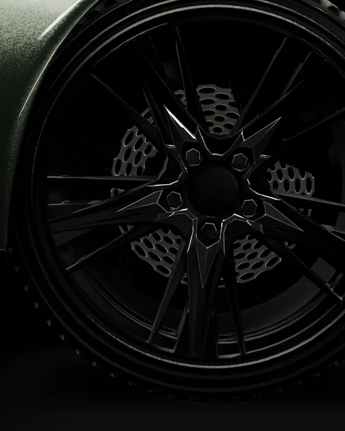

Бережная многоэтапная мойка кузова, дисков и проёмов. Без абразивных губок и щёток, которые оставляют на лаке круговые царапины.
Что входит
- Бесконтактная предварительная мойка пеной
- Ручная мойка методом двух вёдер
- Очистка дисков, колёсных арок и дверных проёмов
- Сушка микрофиброй и воздухом
Цена зависит от размера автомобиля и степени загрязнения.
Оставить заявку на мойку